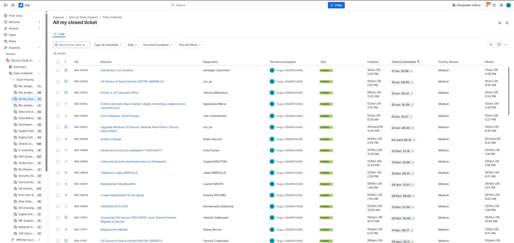
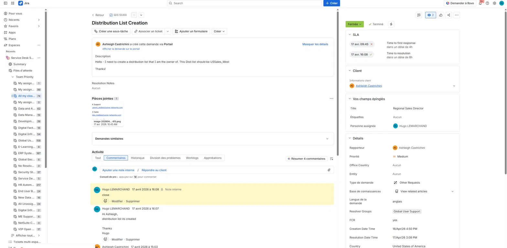

Gestion des incidents via Jira Service Management
Présentation
Dans le cadre de mes missions, j'assure la prise en charge et la résolution des incidents IT via Jira Service Management. Les tickets couvrent les pannes matérielles, les problèmes logiciels, réseau et la gestion des accès utilisateurs.
Bilan d'activité
| Indicateur | Valeur |
|---|---|
| Tickets traités | 74 |
| Taux de résolution | 100 % |
| Tickets en attente | 0 |
| Niveau de support | N1 / N2 |
Captures d'écran

Tous les tickets affichent le statut FERMÉE, assignés à Hugo LEMARCHAND.

Création de la liste USSales_West pour Ashleigh Castrichini. Résolu dans les délais SLA (8h).
Processus de traitement
SLAIntune / Azure AD si nécessaireNote interne avant de répondre au client.
Répondre au client dans JiraFCR si résolu au premier contactFERMÉEBonnes pratiques